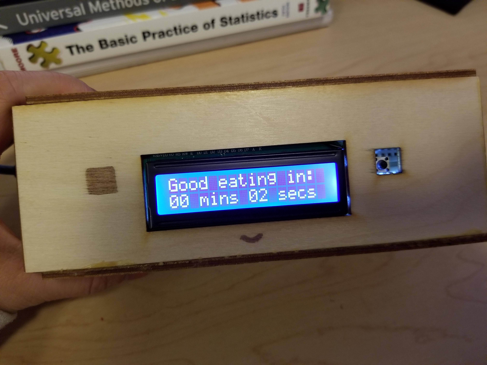
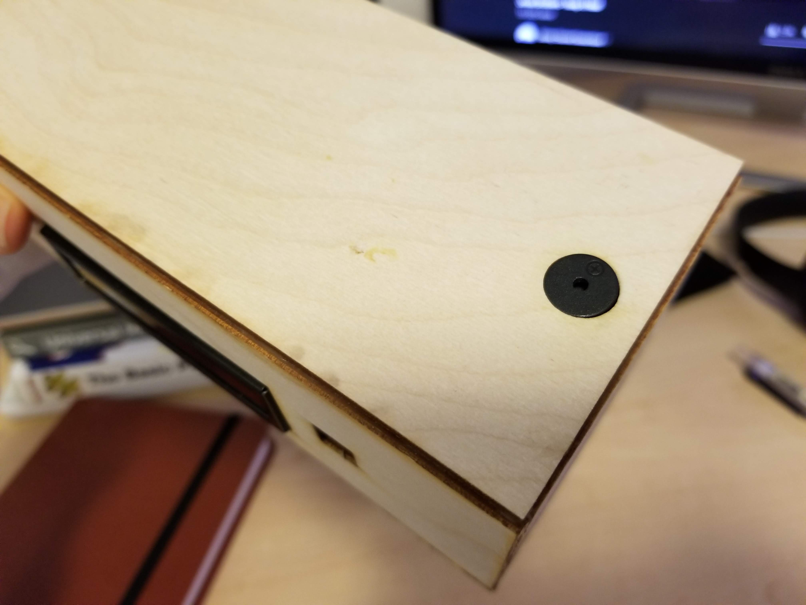
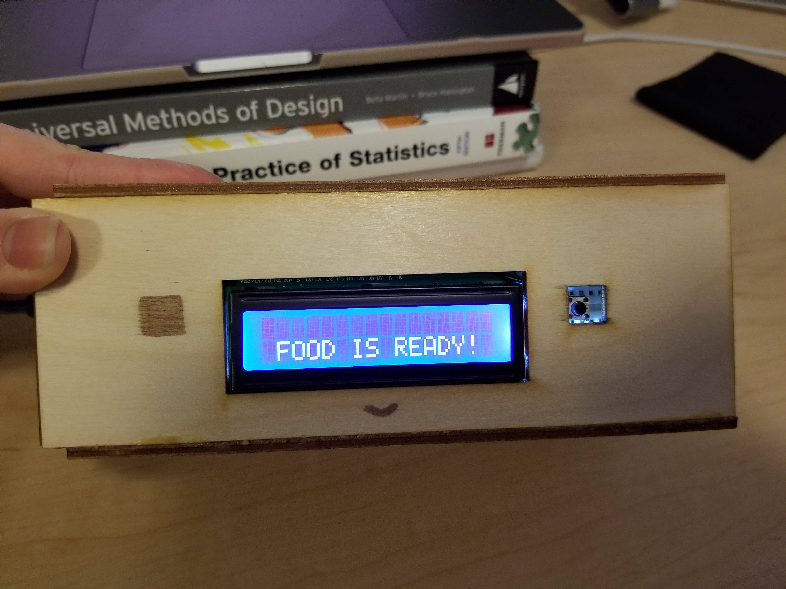
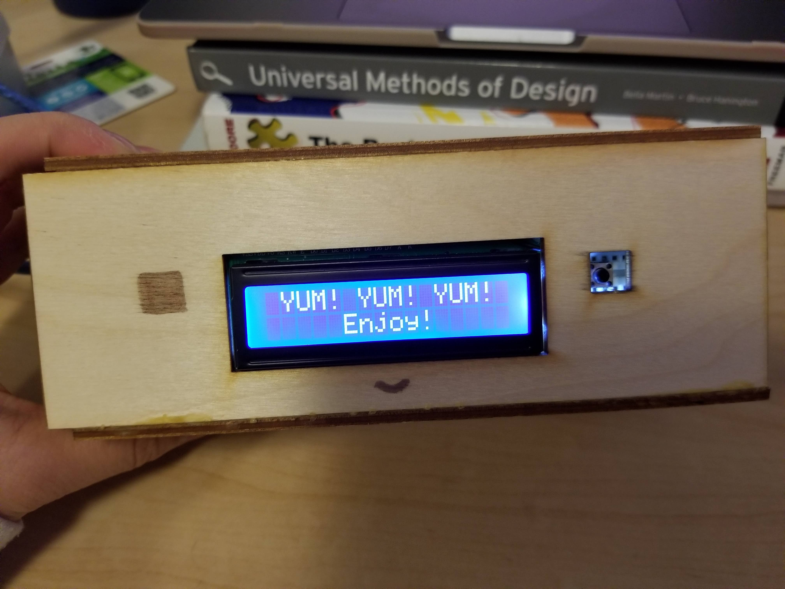
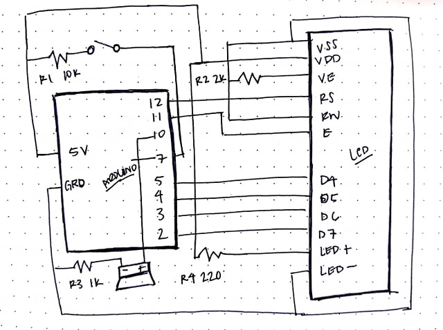
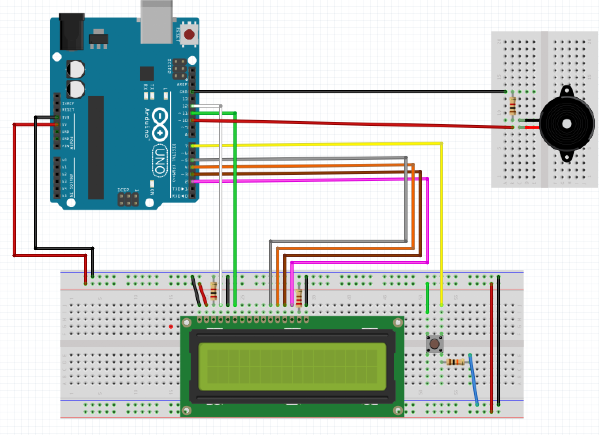
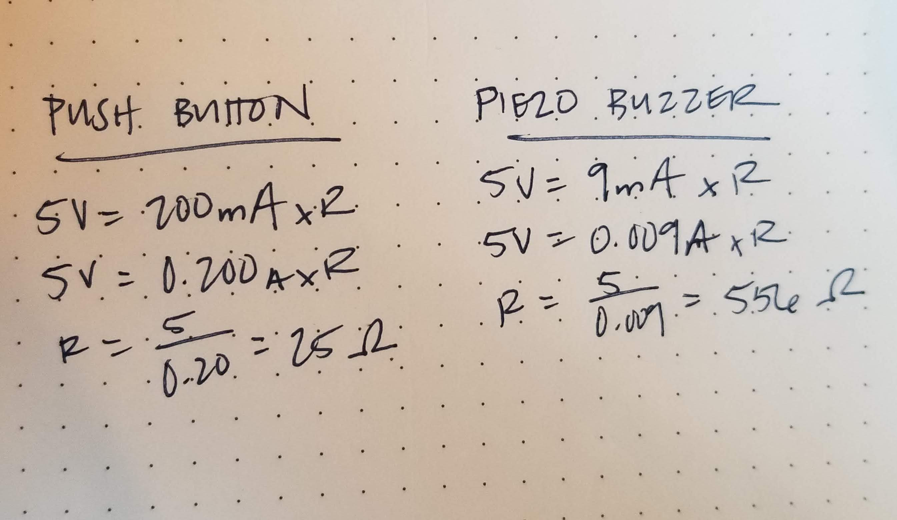
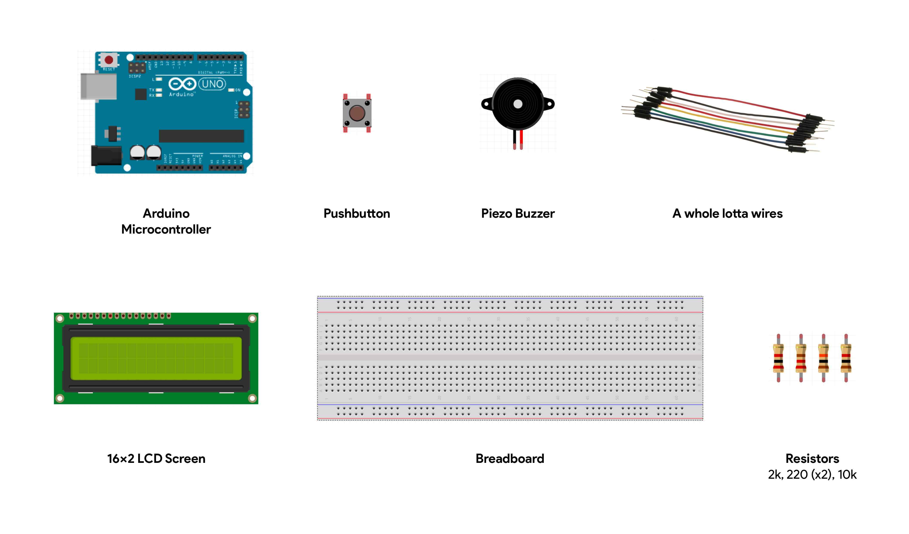
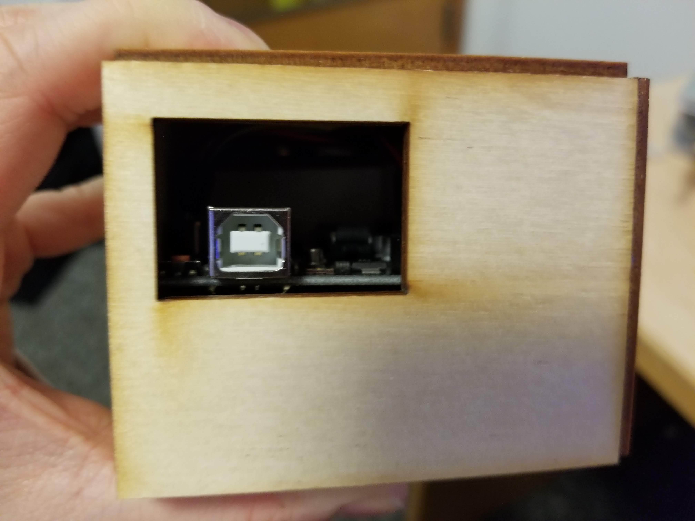

Final Assignment: Tick Tock on the Clock
Overview
The final project needs to connect some intput to some output through digital logic, and must be integrated into a prototype.
The Concept
For my final project, I built and implemented a small timer aimed to be used in the kitchen when cooking. Given various scenarios, such as baking cookies, boiling eggs, or cooking pasta, this simple and friendly timer is meant to alert users of when their process is completed.
Users simply program the minutes and seconds needed for the timer to keep track of using Arduino on the computer. The LCD screen reads “Good eating in:” followed by a countdown timer display.
Once time runs out, the buzzer on the device is triggered and can be turned off using the button.
  Technical Implementation
A snippet of the schematic:
What the circuit looks like:
The arduino powers a 16x2 LCD screen connected to a 2k resistor for lettering to be read, and a 220 resistor for backlighting. The arduino also powers a piezo buzzer which is connected to a 1k resistor. This circuit is closed with a button that is connected to a 10k resistor.
My calculations:
Assuming that 200mA of current can flow through the push button, it is calcuated to require 25 Ohms of resistance, so I used the 10k Ohm resistor. Assuming that 9mA of current can flow through the buzzer, it is calculated that 556 Ohms of resistance is needed. I used a 1k resistor just to be safe.
Here's my arduino code:
#include <LiquidCrystal.h>
const int rs = 12, en = 11, d4 = 5, d5 = 4, d6 = 3, d7 = 2; // Initializing pins from arduino to match names of legs from LCD screen
LiquidCrystal lcd(rs, en, d4, d5, d6, d7); // Initializing
int minutes = 0; // Initializing minutes and setting it to 0
int seconds = 5; // Initializing seconds and setting it to 5
char timeline[16]; // Creating a string that will be written in the LCD
int buzzer = 10; // Initializing the buzzer to pin 10
int pitch = 700; // Initializing the pitch of the buzzer and setting it to 700
const int buttonPin = 7; // Initializing button to pin 7
void setup() {
lcd.begin(16, 2); // Establishing the size of our LCD screen
lcd.print("Good eating in:"); // Printing to top row of LCD screen
pinMode(buzzer, OUTPUT); // Initializing Buzzer as output
pinMode(buttonPin, INPUT); // Initializing button as input
}
void loop() {
int buttonState = digitalRead(buttonPin); // Read button state and call it buttonState
if (minutes > 0 || seconds > 0) { //
lcd.setCursor(0, 1);
sprintf(timeline,"%0.2d mins %0.2d secs", minutes, seconds); // Function written by taking the string "--mins --secs" and updating it with the seconds and minutes
lcd.print(timeline); // Displaying the updated string on the LCD screen
delay(1000); // Delaying for 1 second to emulate 1 second passing by
seconds--; // Counting down by 1 after 1 second
if (seconds == -1) { // When seconds gets to 0
seconds = 59; // Reset values of seconds to 59
minutes --; // Countdown value of minutes by 1
}
if (minutes == 0 & seconds == 0) { // When minutes and seconds are at 0, time's up!
lcd.begin(16, 2); // Establishing the size of our LCD screen
lcd.setCursor(1, 2); // set cursor to second row and 2nd indent
lcd.print("FOOD IS READY!"); // Print text
tone (buzzer, pitch); // Play buzzer sound
}
}
if (buttonState == HIGH) { // When button is pressed
lcd.begin(16, 2); // Establishing the size of our LCD screen
lcd.print(" YUM! YUM! YUM!"); // Print
lcd.setCursor(5, 2); // Set cursor to 6th indent and second row
lcd.print("Enjoy!"); // Print
noTone(buzzer); // Stop buzzer
}
}
Build of Materials
For this project, I used the following materials:
The Enclosure
For the enclosure of the timer, I laser cutted wood pieces that would be glued together to tightly hug the breadboard, arduino, and the mini breadboard. The front of the timer hugs the lcd screen while the top tightly hugs the piezo speaker. The left side of the timer allows for the usb cord to connect the arduino to the computer for programming.
